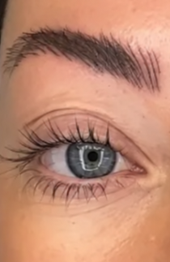
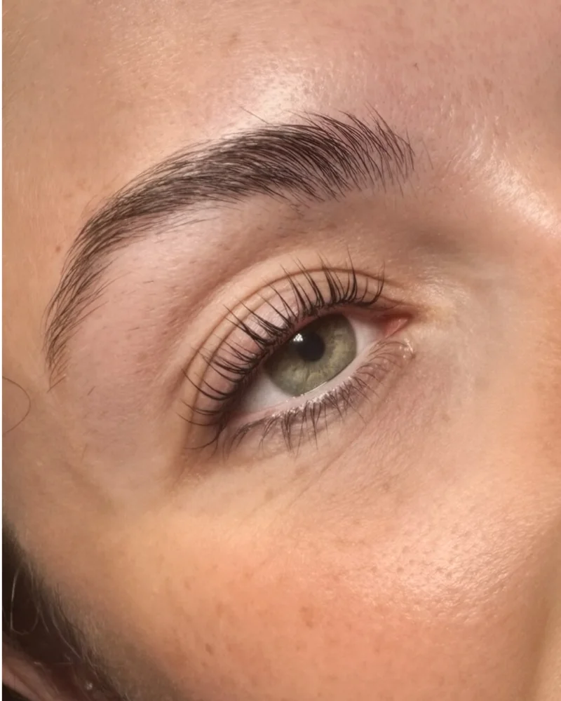
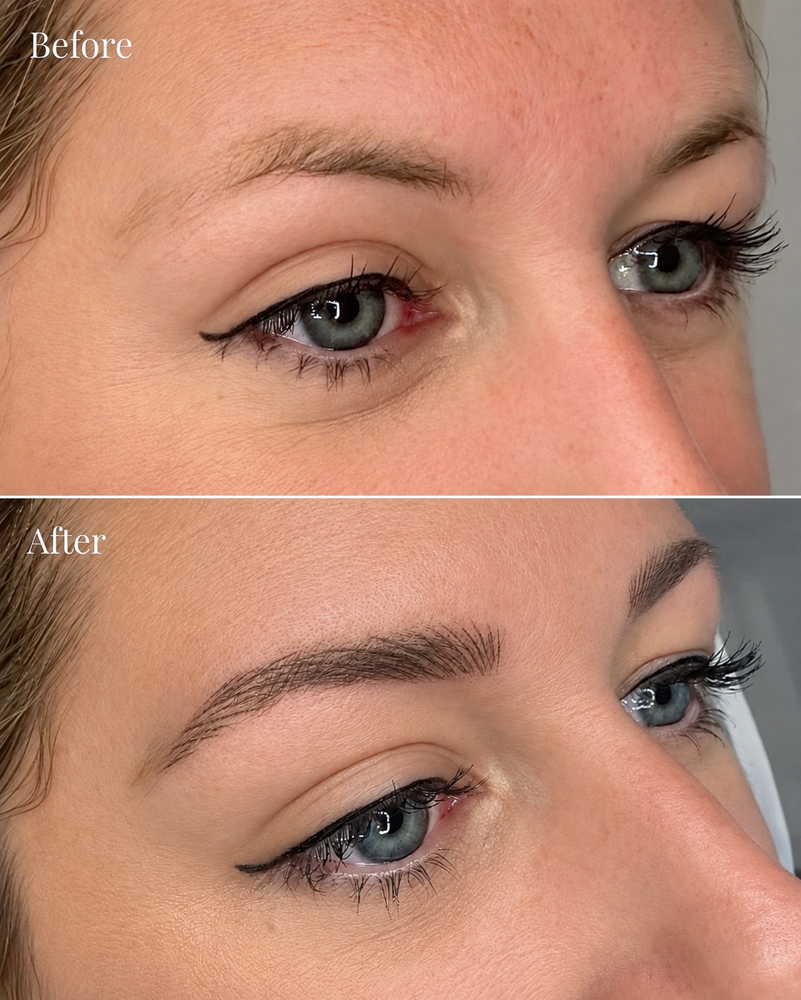
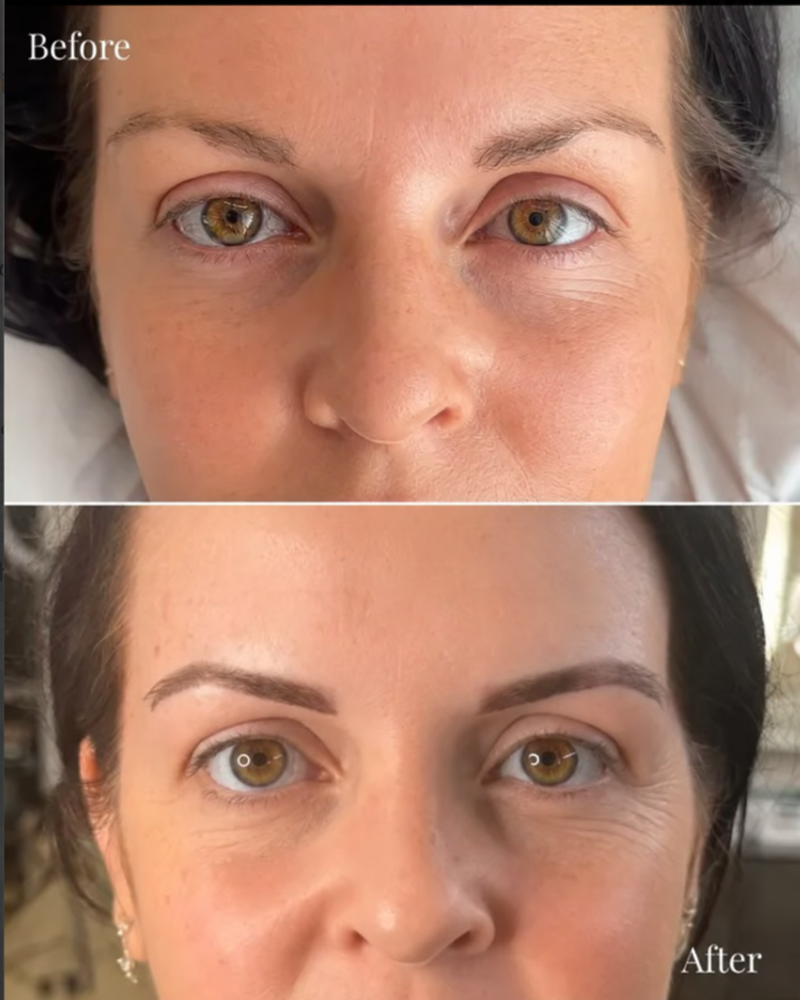
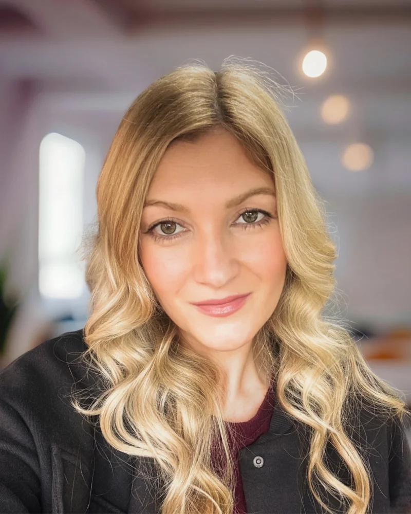
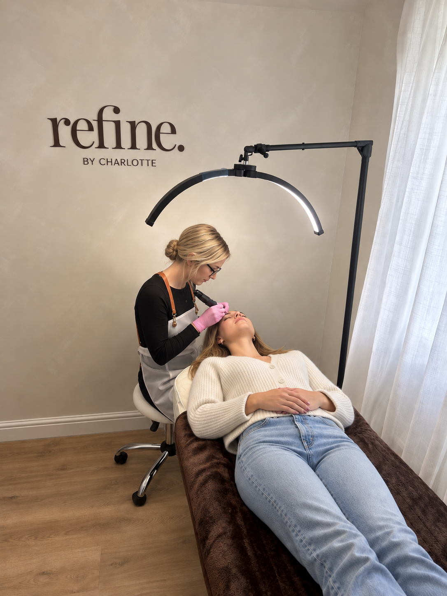
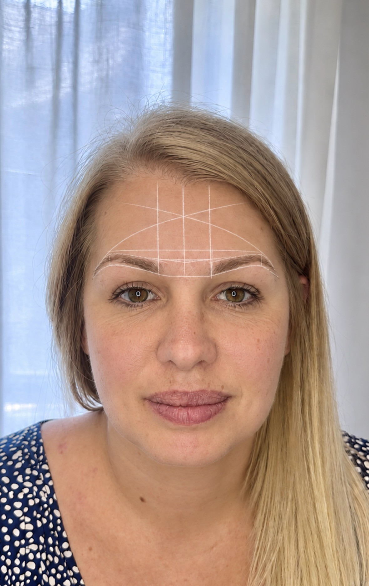

Rockbeare · near Exeter, Devon
Your natural beauty, elevated.
Semi-permanent eyebrows & lash lifts near Exeter
Natural-looking nano brows, ombre powder brows and Korean lash lifts with Charlotte, in a calm, private studio in Rockbeare, Devon.
Brows £225 including top-up · Lash lift + tint £50


Find your treatment
Treatments & prices.
Explore semi-permanent eyebrow tattooing with nano brows and ombre powder brows, tailored to your preferred look. Not sure which to choose? We can talk through your options at your free consultation.
Nano Brows (Hairstroke Technique)
A precise machine technique that creates ultra fine hair-like strokes to replicate the appearance of natural eyebrow hairs. This technique is ideal for clients wanting to enhance shape, fill gaps and create naturally fuller brows, without a 'makeup' effect.
£225 (inc. top-up appointment)
3hrs
Ombre Powder Brows
A soft shading technique using a machine that can be as sheer or as bold as you wish to create more of a makeup look. Unlike the old fashioned 'block brow' ombre brows are borderless with a gentle gradient front to give beautifully shaped and softly shaded semi permanent brows.
£225 (inc. top-up appointment)
3hrs
Korean Lash Lift + Tint
Experience the next level of lash lifting. Gentle, hydrating and truly transformative. The Korean lash lift is known for its advanced techniques, gentle formulas and focus on lash health. Compared to traditional lift treatments, the Korean method lifts from the root to the tip of the lashes, giving an enhanced curled effect.
£50
1.5hr
Before & After
Before and after results from the studio — Hair Strokes and Ombre Powder Brows.



Meet Your Artist.
Hi, I'm Charlotte. I specialise in bespoke permanent makeup brow services and lash lift treatments to enhance your natural beauty - and boost your confidence.
Every treatment is performed with precision and a client-first approach, thoughtfully customised to achieve balanced and natural-looking results.
I trained with industry-leading and award-winning permanent makeup artist Gemma Henderson, and I am fully licensed and insured.
Based at a private home studio in Rockbeare, just outside Exeter — serving clients from Exeter, Exmouth, Honiton, Sidmouth, Ottery St Mary, Cullompton and across East Devon. Refine by Charlotte is perfect for those wanting low-maintenance beauty with a relaxed one-to-one experience.
I look forward to welcoming you!


An Experience, Not Just an Appointment
Whether you're looking for permanent makeup brows or a specialist lash lift, our calm private studio offers a personalised one-to-one experience tailored to you.
PMU is not a standard, quick treatment, you will receive a structured personalised process. Here's what you can expect:
1. Consultation
Our free in-depth consultation is where we'll discuss your brow goals, your style and what you're hoping to achieve so we can design a tailored treatment plan that suits your unique needs. We will do a medical review and a patch test will be performed prior to treatment.
2. Bespoke Treatment
Every treatment is bespoke, brows are carefully mapped and shaped to perfectly complement your unique facial structure and bone symmetry because every client is different. We'll fine tune it together until you are 100% happy with the outline, then start the treatment using advanced machine techniques and premium quality pigments - always with a gentle client-first approach. Step-by-step aftercare guidance is supplied for optimum healing and results.
3. Top-up
Permanent makeup is a 2-step process and included in the price you will get a top-up session 6 weeks after your initial treatment. This follow up session is where we will assess how your skin has retained pigment and make any necessary adjustments to colour or shape to ensure your final result is even, long-lasting and beautifully enhanced.
Reviews from our clients.
Latest from the studio.
Your questions, answered.
No. I offer machine-based nano brows and ombre powder brows. At your free consultation, we can discuss which treatment suits your preferred look.
Permanent makeup (also known as SPMU, semi permanent makeup, cosmetic tattooing or micropigmentation) is a digital machine technique where pigment is implanted into your skin. It's designed to enhance your natural features and simplify your daily beauty routine.
PMU typically lasts 1–3 years, though pigments fade over time rather than staying permanently like a traditional tattoo. Results can depend on many factors such as skin type, age, lifestyle and aftercare. We recommend maintenance colour boosts every 12-18 months to keep your results looking fresh.
Most clients describe the sensation as mild discomfort rather than pain. Everyone's pain threshold is different, but many clients find the process very manageable and even relaxing.
Initial healing takes 7–14 days, during which the area may look darker, at first then soften up to 30-40% once healed. Your follow-up top-up appointment is at 6 weeks.
Once you have had your initial treatment it takes between 4-6 weeks to heal. You will receive full aftercare instructions for your nano or ombre powder brow treatment which are based on the following.
Avoid getting the treatment area wet for 2 weeks after your treatment. Keep the area clean and don't apply makeup close to the area for the first few days. Avoid swimming, saunas, jacuzzis, hydroxy acids, and look after your general well being. Avoid sun exposure to the area, (for as long as possible, to avoid fading) don't exercise for 48 hours after your appointment.
These are all recommendations to ensure you achieve the maximum results from your treatment and to help with the healing process. For a full day-by-day guide, see our brow aftercare & healing guide.
Nano brows and ombre powder brows are both £225, which includes your top-up appointment 6 weeks after the initial treatment. The Korean lash lift + tint is £50. Prices include a full consultation, and there are no hidden extras — the cost of your nano or ombre powder brow treatment covers everything from mapping and colour matching through to your perfecting top-up.
No the treatment is not suitable if you are pregnant and won't be possible until after you have stopped breastfeeding.
The below is recommended to ensure you achieve the best results from your treatment and to help with the healing process.
It is recommended that you avoid caffeine, alcohol and anti-inflammatory medicine, such as ibuprofen or paracetamol on the day before and of your treatment. Avoid using retinol or acids 4 weeks before and after your treatment, if you are having a brow treatment please don't tint, wax or thread your brows within the two weeks leading up to your appointment. Please make sure you aren't wearing any fake tan or tinted moisturiser when you attend the consultation or appointment as it is best to see your natural skin colour. You should avoid having botox or fillers at least four weeks before your appointment.
Let's talk
Start with a free consultation.
Tell Charlotte which treatment you're interested in. She'll get in touch to answer your questions and arrange the next step.
Your enquiry is a request, rather than a confirmed appointment.
Message me on WhatsAppPrivate studio in Rockbeare, near Exeter.
Appointments by arrangement.